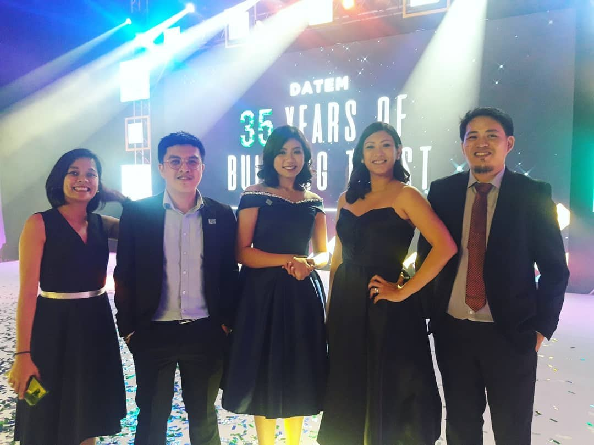
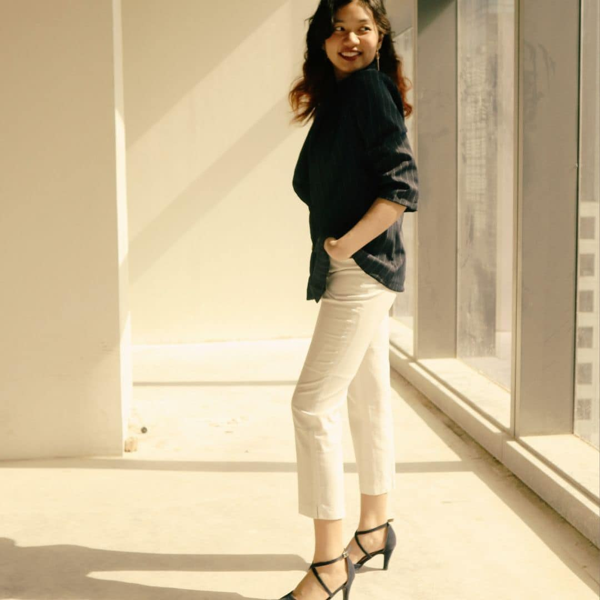

Chapter 01Where it began
The corporate beginning.
Before stepping into freelancing, I worked as a Marketing Assistant for a corporate company in the Philippines. I genuinely enjoyed the work, especially organizing corporate events and collaborating with different teams.
Over time, I began to feel burned out. I poured so much time and energy into my job while feeling that my efforts weren’t reflected in the opportunities and compensation I received. Deep down, I wanted more room to grow, create a greater impact, and have more freedom over my career.
Room to grow. Freedom to create.